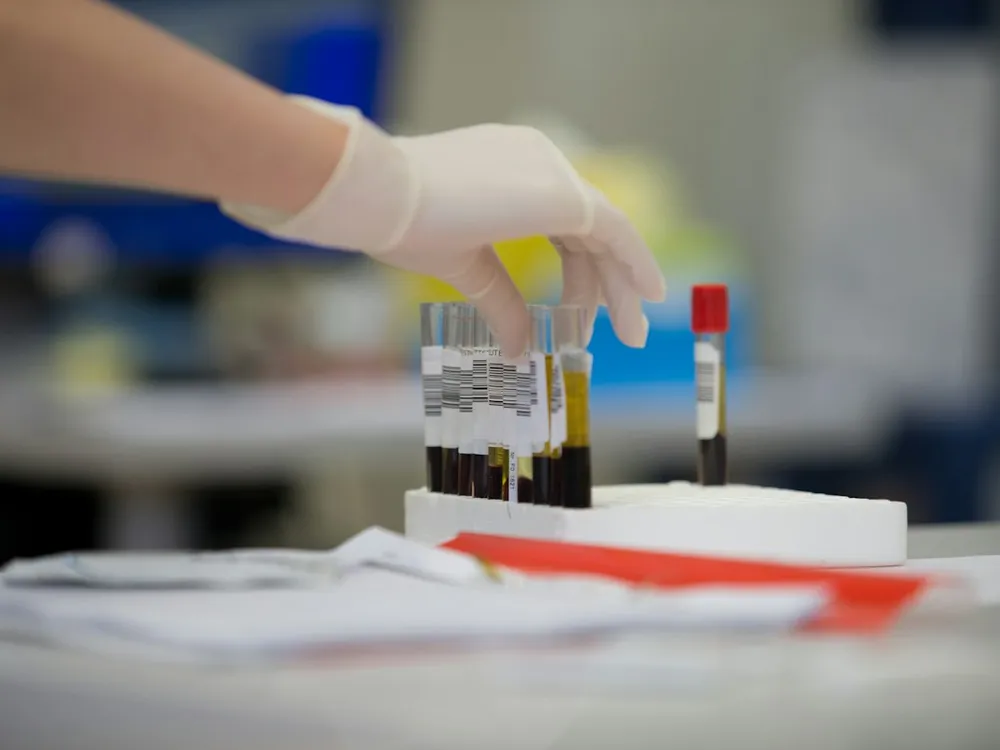
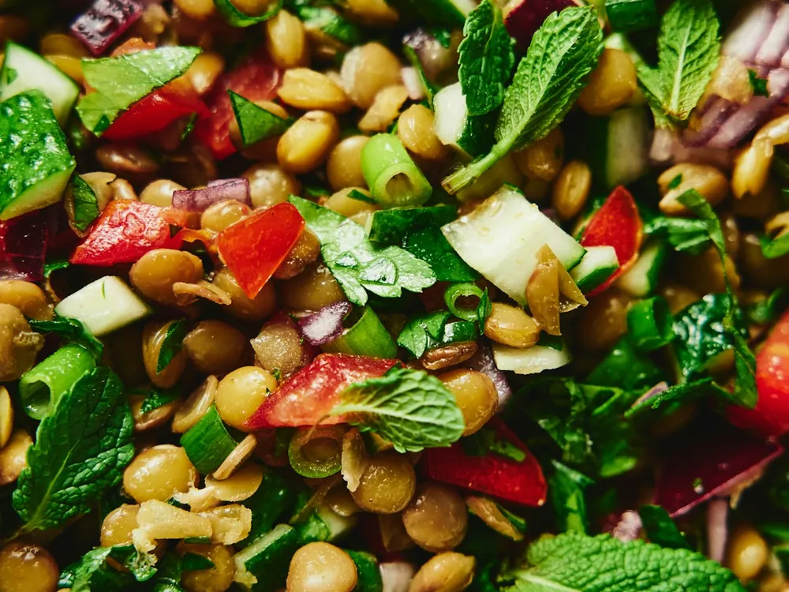

Ferritina baja: los nuevos valores del hierro en mujeres

«Tienes la ferritina un poco baja, pero está dentro de lo normal». Si alguna vez te han dicho esto mientras seguías cansada, con el pelo más débil o sin energía para nada, este artículo te interesa. La Sociedad Americana de Hematología acaba de publicar su primera guía basada en la evidencia para diagnosticar el déficit de hierro, y el valor de ferritina a partir del cual se considera que te falta hierro se ha duplicado. Te explico qué ha cambiado, a quién afecta y qué puedes hacer desde la alimentación.
Qué es la ferritina y por qué se mira
El hierro es imprescindible para fabricar la hemoglobina, la proteína de los glóbulos rojos que transporta el oxígeno por todo el cuerpo. También participa en la producción de energía, en el funcionamiento del sistema inmunitario y en el desarrollo del cerebro. Como el cuerpo no puede fabricarlo, depende de lo que comemos y de lo que es capaz de absorber.
La ferritina es la proteína que guarda el hierro de reserva. Su valor en sangre funciona como un indicador de cómo está tu «despensa» de hierro. Cuando las reservas se vacían, la ferritina baja antes de que aparezca la anemia, por eso es el análisis más útil para detectar el déficit de hierro a tiempo3.
El déficit de hierro es la carencia nutricional más frecuente del mundo, y las mujeres en edad fértil están entre las más afectadas por las pérdidas de la menstruación, el embarazo y la lactancia3,4.
Qué ha cambiado en los valores
Durante años, el valor de referencia más usado para diagnosticar déficit de hierro en adultos era una ferritina de 15 ng/mL o menos, una cifra basada sobre todo en la opinión de expertos. Muchos laboratorios todavía marcan como límite inferior entre 12 y 15 ng/mL. El problema es que, con ese límite, se quedaban sin diagnosticar muchas personas que ya tenían las reservas vacías.
Los estudios que miran cuándo empieza el cuerpo a «notar» la falta de hierro apuntan a valores más altos. Un estudio internacional con datos de mujeres y niños de varios continentes encontró que, en mujeres no embarazadas, la producción de glóbulos rojos empieza a resentirse con una ferritina por debajo de unos 25 ng/mL2.
Con esta evidencia, la guía de la Sociedad Americana de Hematología de 2026 propone estos nuevos umbrales de ferritina para diagnosticar déficit de hierro1:
| Grupo | Antes | Ahora |
|---|---|---|
| Mujeres con menstruación | ≤ 15 ng/mL | ≤ 30 ng/mL |
| Mujeres con reglas abundantes, síntomas o que buscan embarazo | ≤ 15 ng/mL | ≤ 50 ng/mL |
| Embarazadas | ≤ 15 ng/mL | ≤ 30 ng/mL (≤ 50 si hay anemia y otros factores de riesgo) |
| Resto de adultos | ≤ 15 ng/mL | ≤ 30 ng/mL |
| Niños de 9 meses a 4 años | ≤ 12 ng/mL | ≤ 20 ng/mL |
Un detalle práctico: los ng/mL y los µg/L son equivalentes, así que si tu analítica usa una u otra unidad, el número se lee igual. Y si tienes una enfermedad inflamatoria, la ferritina puede salir más alta de lo real; en ese caso la guía recomienda mirarla junto con la saturación de transferrina1.
Déficit de hierro sin anemia: también cuenta
Uno de los mensajes más importantes de la nueva guía es que el déficit de hierro hay que diagnosticarlo y tratarlo aunque todavía no haya anemia1. Es decir, tu hemoglobina puede estar bien y aun así faltarte hierro.
Esto no es solo una cuestión de números. Cuando las reservas de hierro están bajas, es habitual notar cansancio, falta de concentración, más caída del pelo, uñas frágiles, piernas inquietas o menos rendimiento al hacer deporte. En un ensayo clínico con mujeres con menstruación, sin anemia y con ferritina baja, las que tomaron hierro redujeron su fatiga bastante más que las que tomaron placebo5.
Importante: estos síntomas también pueden deberse a otras causas, como problemas de tiroides, falta de sueño o estrés. Por eso no conviene sacar conclusiones solo por cómo te sientes: hace falta una analítica y una valoración profesional.
Si tu analítica dice «normal»

Es muy probable que durante un tiempo los informes de laboratorio sigan marcando como normal una ferritina de 18 o de 25. Si es tu caso y tienes síntomas, reglas abundantes o estás pensando en quedarte embarazada, lo más sensato es comentarlo con tu médico y llevarle tus analíticas.
Lo que no te recomiendo es empezar a tomar suplementos de hierro por tu cuenta. El exceso de hierro también es perjudicial, los suplementos pueden sentar mal al estómago y, sobre todo, hay que saber por qué falta hierro. Una ferritina baja puede deberse a una alimentación con poco hierro, pero también a pérdidas de sangre, celiaquía u otros problemas de absorción que hay que estudiar4.
Alimentos ricos en hierro y cómo absorberlo mejor
En los alimentos hay dos tipos de hierro6:
- Hierro hemo: está en carnes, pescados y mariscos. Se absorbe mejor y depende menos del resto de la comida. Destacan la carne roja, el hígado, los mejillones, las almejas, los berberechos y las sardinas.
- Hierro no hemo: está en legumbres, frutos secos, semillas, cereales integrales, verduras de hoja verde y huevo. Se absorbe peor, pero cómo lo combines cambia mucho el resultado.

Estos trucos ayudan a aprovechar mejor el hierro de origen vegetal:
- Acompáñalo de vitamina C. Pimiento, tomate, naranja, kiwi, fresas o un chorrito de limón en el mismo plato mejoran su absorción6. Unas lentejas con pimiento o una ensalada de garbanzos con tomate y una mandarina de postre son buenas opciones.
- Suma un poco de hierro hemo. Añadir algo de carne o pescado a un plato de legumbres también mejora la absorción del hierro vegetal.
- Deja el café y el té para otro momento. Sus polifenoles reducen mucho la absorción del hierro no hemo cuando se toman con la comida7. Mejor tomarlos al menos una hora antes o después.
- Separa los lácteos de las comidas ricas en hierro si tienes déficit, porque el calcio también compite con su absorción.
- Remoja, germina o fermenta. El remojo de las legumbres y el pan de masa madre reducen los fitatos, que dificultan la absorción del hierro.
Si sigues una alimentación vegetariana o vegana, puedes tener un buen nivel de hierro, pero merece la pena planificarla bien y revisar tus analíticas con regularidad.
Suplementos de hierro: con cabeza
Cuando hay un déficit confirmado, la alimentación ayuda a mantener las reservas, pero muchas veces no basta para llenarlas, y el médico pauta un suplemento. Como también soy farmacéutica, estos son los puntos que más reviso con mis pacientes:
- Tomarlo en días alternos puede funcionar mejor. En mujeres con reservas bajas, una dosis cada dos días se absorbió mejor que la misma dosis todos los días8. Esto es algo que debe decidir tu médico, pero vale la pena preguntarlo, sobre todo si el hierro te sienta mal.
- Cuidado con las interacciones. El hierro reduce la absorción de algunos medicamentos, como la levotiroxina, y los antiácidos o el calcio reducen la del hierro. Hay que separar las tomas.
- Las molestias digestivas son frecuentes. Estreñimiento, náuseas o heces oscuras son habituales. Hay formas de mejorar la tolerancia, así que no lo dejes sin comentarlo.
- Hay que repetir la analítica. Para comprobar que las reservas se recuperan y decidir cuándo parar.
Cuándo acudir al médico
Consulta con tu médico si tienes cansancio que no mejora, reglas muy abundantes o que duran más de una semana, mareos, palpitaciones o falta de aire con poco esfuerzo, ganas de comer hielo o tierra, o si estás embarazada o buscando embarazo. También si tienes síntomas digestivos, sangre en las heces o pérdida de peso sin explicación, porque el déficit de hierro puede ser la señal de otro problema que hay que estudiar4.
Cómo te ayudo en consulta en Jaén
Como nutricionista en Jaén y farmacéutica, te ayudo a que tu alimentación sume en lugar de restar. En consulta, presencial en el centro de Jaén u online, trabajamos así:
- Revisamos juntas tus analíticas, tus síntomas y lo que comes en tu día a día.
- Organizamos menús con alimentos ricos en hierro y buenas combinaciones, adaptados a tus gustos y sin pesar nada.
- Si tomas suplementos o medicación, te ayudo a encajar las tomas para que se absorban bien.
- Si sigues una alimentación vegetariana, nos aseguramos de que sea completa.

Isabel Lara Muñoz es dietista-nutricionista colegiada (CODINAN AND-01693) y farmacéutica por la Universidad de Granada, especializada en patología digestiva y nutrición oncológica. Pasa consulta en Jaén y online.
Referencias
- Powers JM, Lim MY, Achebe MO, et al. American Society of Hematology 2026 guidelines for diagnosis of iron deficiency. Blood Adv. 2026;10(21):7353-7374. doi:10.1182/bloodadvances.2025015950
- Addo OY, Mei Z, Jefferds MED, et al. Physiologically based serum ferritin thresholds for iron deficiency among women and children from Africa, Asia, Europe, and central America: a multinational comparative study. Lancet Glob Health. 2025;13(5):e831-e842. doi:10.1016/S2214-109X(25)00009-9
- Pasricha SR, Tye-Din J, Muckenthaler MU, Swinkels DW. Iron deficiency. Lancet. 2021;397(10270):233-248. doi:10.1016/S0140-6736(20)32594-0
- Camaschella C. Iron-deficiency anemia. N Engl J Med. 2015;372(19):1832-1843. doi:10.1056/NEJMra1401038
- Vaucher P, Druais PL, Waldvogel S, Favrat B. Effect of iron supplementation on fatigue in nonanemic menstruating women with low ferritin: a randomized controlled trial. CMAJ. 2012;184(11):1247-1254. doi:10.1503/cmaj.110950
- Hurrell R, Egli I. Iron bioavailability and dietary reference values. Am J Clin Nutr. 2010;91(5):1461S-1467S. doi:10.3945/ajcn.2010.28674F
- Hurrell RF, Reddy M, Cook JD. Inhibition of non-haem iron absorption in man by polyphenolic-containing beverages. Br J Nutr. 1999;81(4):289-295. doi:10.1017/S0007114599000537
- Stoffel NU, Cercamondi CI, Brittenham G, et al. Iron absorption from oral iron supplements given on consecutive versus alternate days and as single morning doses versus twice-daily split dosing in iron-depleted women: two open-label, randomised controlled trials. Lancet Haematol. 2017;4(11):e524-e533. doi:10.1016/S2352-3026(17)30182-5
Este artículo es divulgativo y no sustituye la valoración individual de un profesional sanitario. No empieces ni cambies ningún suplemento o medicamento sin consultarlo con tu médico.